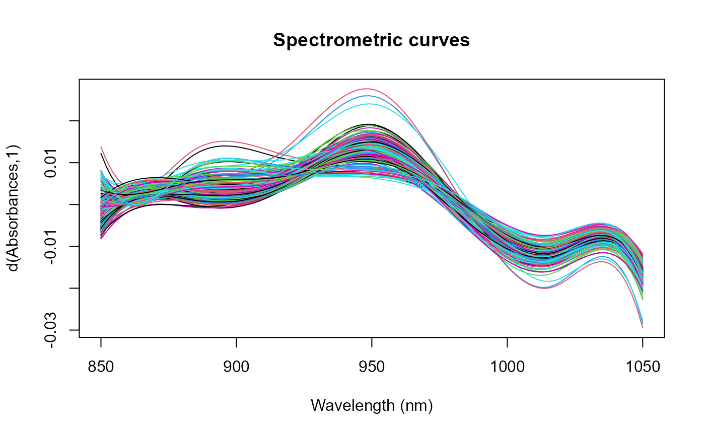
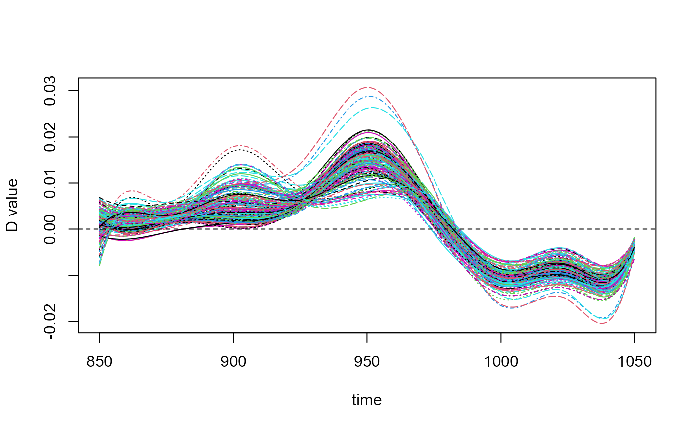

Computes the derivative of functional data.
If method ="bspline", "exponential", "fourier",
"monomial" or "polynomial".
fdata.deriv function creates a basis to represent the functional
data.
The functional data are converted to class fd using the
Data2fd function and the basis indicated in the method.
Finally, the function calculates the derivative of order nderiv of
curves using deriv.fd function.
If method="fmm", "periodic", "natural" or
"monoH.FC" is used splinefun function.
If method="diff", raw derivation is applied. Not recommended to
use this method when the values are not equally spaced.
fdata.deriv(
fdataobj,
nderiv = 1,
method = "bspline",
class.out = "fdata",
nbasis = NULL,
...
)fdata class object.
Order of derivation, by defalult nderiv=1.
Type of derivative method, for more information see details.
Class of functional data returned: fdata or
fd class.
Number of Basis for fdatataobj\$DATA. It is only used
if method ="bspline", "exponential", "fourier",
"monomial" or "polynomial"
Further arguments passed to or from other methods.
Returns the derivative of functional data of fd class if
class.out="fd" or fdata class if class.out="fdata".
data(tecator)
absorp=tecator$absorp.fdata
tecator.fd1=fdata2fd(absorp)
tecator.fd2=fdata2fd(absorp,"fourier",9)
tecator.fd3=fdata2fd(absorp,"fourier",nbasis=9,nderiv=1)
#tecator.fd1;tecator.fd2;tecator.fd3
tecator.fdata1=fdata(tecator.fd1)
tecator.fdata2=fdata(tecator.fd2)
tecator.fdata3=fdata(tecator.fd3)
tecator.fdata4=fdata.deriv(absorp,nderiv=1,method="bspline",
class.out='fdata',nbasis=9)
tecator.fd4=fdata.deriv(tecator.fd3,nderiv=0,class.out='fd',nbasis=9)
plot(tecator.fdata4)

plot(fdata.deriv(absorp,nderiv=1,method="bspline",class.out='fd',nbasis=11))

#> [1] "done"